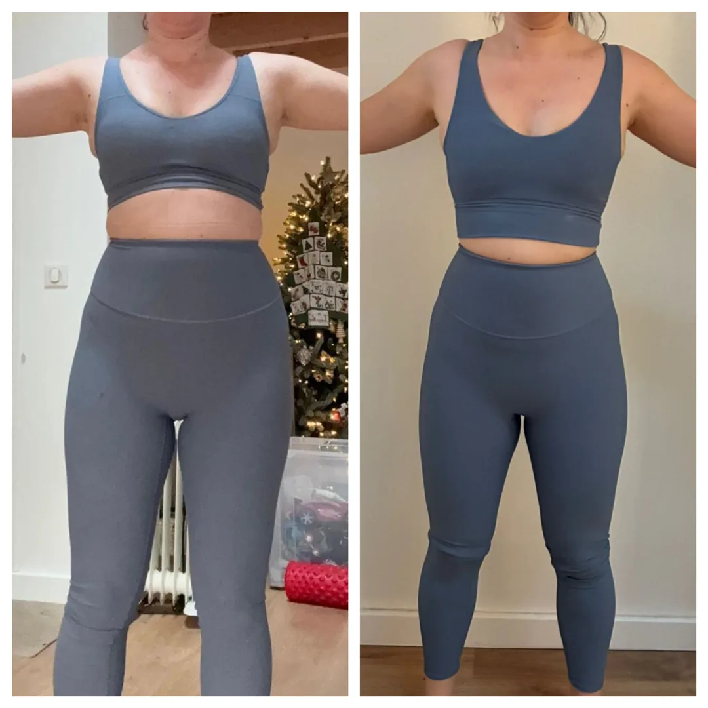
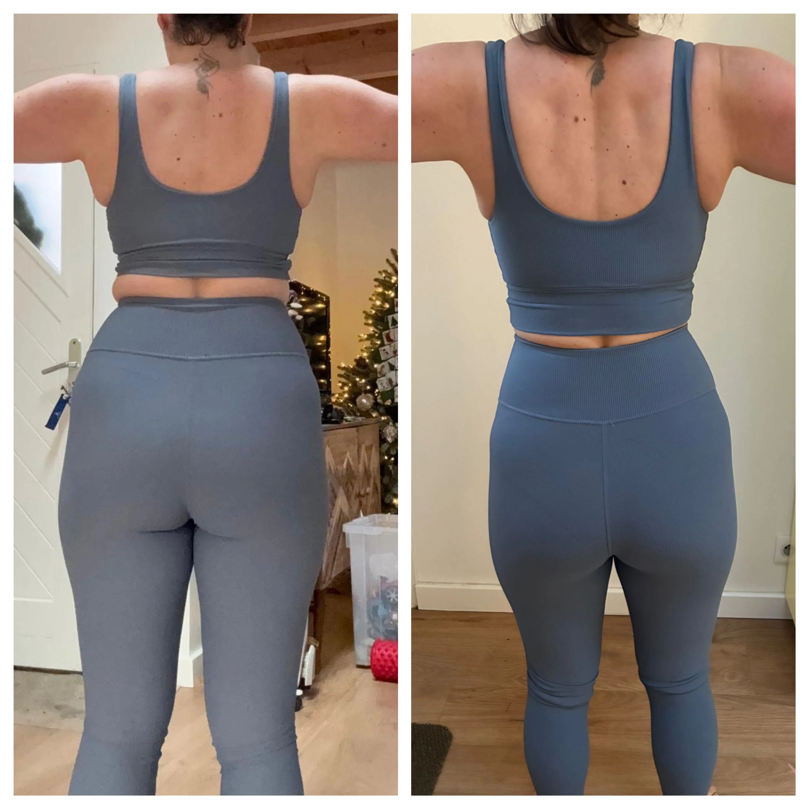
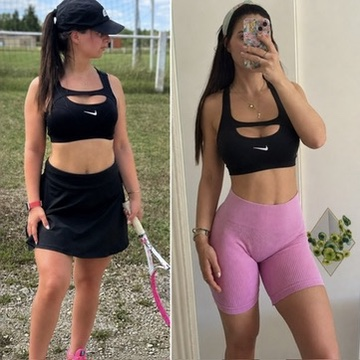

Des femmes comme toi : débordées, post-partum, épuisées, qui avaient tout essayé. Elles ont changé leur corps, et leur vie avec. Résultats réels, photos non retouchées, publiées avec leur accord.
Pas des athlètes. Pas des femmes avec du temps libre. Des mamans, des actives, des femmes qui avaient déjà tout essayé. Glisse les photos pour voir les autres angles.
À domicileHybrideÀ distanceCoaching sur-mesure

Vue de face · avant → après

Vue de dos · avant → après
Objectif : perte de gras · photo non retouchée
Louise
Maman de 2 enfants · coaching à domicile · Essonne (91) · 2 séances par semaine
−9 cmtour de taille
−5 kgpoids perdu
9 moisde suivi
Lire son histoire
Une vraie envie de reprendre le contrôle de son corps, sans se priver ni s'épuiser. Programme sur-mesure, 2 séances par semaine à domicile, adapté à sa vie réelle. Résultat : −9 cm de tour de taille, un dos redessiné, une silhouette transformée. En 9 mois.
Vue de face · avant → aprèsVue de dos · avant → après
Objectif : perte de poids · 100 % à distance
Maria
38 ans · maman de 2 enfants · coaching 100 % à distance + Boost Nutrition
−10 kgpoids perdu
8 moisde suivi
100 %à distance
Lire son histoire
Deux enfants, peu de temps, et jamais une séance en face à face : tout s'est fait à distance. Un programme construit pour elle, l'alimentation ajustée chaque mois, un suivi WhatsApp et un bilan régulier. Résultat : −10 kg en 8 mois, un ventre affiné et des fessiers redessinés.
Vue de face · avant → aprèsVue de profil · avant → après
Objectif : recomposition corporelle · suivi en cours
Lise
Coaching à distance puis hybride · programme sur-mesure · suivi WhatsApp
6 moisde suivi
100 %sur-mesure
0régime extrême
Lire son histoire
Moins de gras, plus de tonus, un ventre affiné et une taille dessinée. Et elle continue.
Lise s'entraînait déjà avant de me rejoindre, mais elle stagnait : beaucoup d'efforts, peu de changements visibles. On a tout restructuré ensemble : un programme sur-mesure réellement progressif, l'alimentation ajustée à chaque bilan et un vrai suivi, à distance puis en hybride. Résultat : une véritable recomposition corporelle, moins de gras, plus de tonus, un ventre affiné et une taille dessinée, sans régime extrême. Et elle continue.
Objectif : Rallye Aïcha des Gazelles · suivi en cours
Monya
Coaching à domicile · Essonne (91) · 2 séances par semaine + plan nutrition sur-mesure
−10 cmtour de taille
−5 kgpoids perdu
2 mois17 séances
Lire son histoire
−10 cm de tour de taille et −5 kg en 2 mois, en 17 séances. Ventre affiné, posture redressée, endurance qui progresse. Et elle continue jusqu'au départ du rallye.
Un double défi : perdre du poids et préparer son corps au Rallye Aïcha des Gazelles, plusieurs jours de désert où l'endurance, le gainage et le mental font la différence. Chez elle, on alterne renforcement musculaire et cardio, avec des sorties en extérieur pour travailler l'endurance. Une nutrition ajustée à chaque bilan.
32 ans · s'entraînait déjà seule · coaching sur-mesure
Ventre affiné, taille dessinée. La preuve qu'avec la bonne méthode, les efforts paient.
Lire son histoire
Elle s'entraînait déjà, mais avait du mal à voir des résultats : beaucoup d'efforts, peu de changements. Avec un programme construit pour elle et un vrai suivi, son corps a enfin répondu.
Mois 1 · −3 cm de tailleMois 2 · fessiers redessinésVue de dos · avant → après
Objectif : prise de masse ciblée · aucune retouche
Emeline
Présentiel, puis hybride et à distance · maman de 2 enfants
−3 cmtour de taille, mois 1
2 moisfessiers redessinés
1 + 3séances par semaine
Lire son histoire
Fessiers redessinés, taille fine. La formule hybride, résultats réels.
Mois 1 : elle ne croyait plus vraiment aux résultats rapides. En 4 semaines, elle a vu sa taille affiner et ses fessiers remonter : −3 cm de tour de taille, fessiers galbés. Et elle continue.
Mois 2 : maman de 2 enfants, peu de temps. 1 séance par semaine avec moi, 3 autres séances créées sur-mesure en autonomie. La progression parle d'elle-même.
−4 cm cuisses · −5 cm poitrine. Fessiers remontés.
En 4 séances à domicile, une transformation visible sur toute la silhouette. Fessiers remontés, cuisses et poitrine affinées, sans régime, sans s'épuiser.
Sans programme fait pour elle, sans direction claire, elle tournait en rond depuis des années. Elle m'a contactée. On a tout repris de zéro, sans se presser.
J'ai vécu ce que tu vis. Alors je sais que c'est possible.
Compétitrice bikini fitness. Puis grossesse difficile : corps transformé, confiance en miettes. J'ai tout reconstruit, depuis zéro. Et ça m'a rendu une meilleure coach.
Après ma grossesse, je ne reconnaissais plus mon corps. La fatigue, le ventre qui ne partait pas, la silhouette qui avait changé. J'avais beau être coach, ça ne m'avait pas épargnée.
AvantUn corps que je ne reconnaissais plus. Une confiance qui avait disparu. La fatigue comme état normal.
AprèsUn corps fort, redessiné, qui me ressemble. De l'énergie retrouvée. La fierté de m'être prouvé que c'était possible.
« Je me suis prouvé que le corps est modulable à chaque étape de la vie. Si moi j'y suis arrivée, toi aussi. »
Pas besoin d'être athlète. Pas besoin de 2 h de sport par jour. Pas besoin de te priver. Tu as juste besoin de la bonne méthode, et de quelqu'un qui croit en toi.
Reconstruction complète post-partum

Grossesse → 1 an post-partum
Les vraies raisons pour lesquelles tu n'as pas encore commencé.
Je n'ai pas le tempsOn construit autour de ta vraie vie, pas autour d'un idéal : quelques séances bien pensées par semaine, calées sur ton planning.
Je ne suis pas sportiveParfait : on part de là où tu es. Mes clientes débutantes obtiennent les mêmes résultats.
Mon corps a changé après la grossesseJe suis passée par là. Le post-partum, c'est ma spécialité. Ton corps peut se reconstruire.
Je vais devoir me priverAucun régime extrême. On travaille sur le mouvement, pas sur la frustration alimentaire.
Au-delà du miroir : ce qui change vraiment.
Le physique, c'est ce qu'on voit en premier. Mais ce qui dure, c'est ce que tu ressens à l'intérieur.
Fatigue permanente, épuisement au réveil
Tu te lèves avec l'envie de bouger
L'énergie ne revient pas tout de suite, mais quand elle revient, elle change tout. Tu redeviens présente pour toi et pour tes enfants.
Tu te caches, tu évites les photos
Tu assumes ton reflet. Tu rayonnes.
Pas parce que tu es parfaite, mais parce que tu avances. Ça se voit. Ça s'entend dans ta façon de parler de toi.
Tu commences, tu arrêtes, tu recommences
Une routine qui tient, enfin.
Tenir un engagement envers toi-même, ça change quelque chose en profondeur. Cette discipline déborde dans toute ta vie.
Tu passes toujours en dernier
Tu t'autorises à investir en toi.
S'occuper de soi, ce n'est pas de l'égoïsme. C'est le meilleur investissement que tu peux faire, pour toi et pour ceux que tu aimes.
« Dans 3 mois, tu peux être une autre femme. Pas parfaite, mais enfin elle-même. »
Je ne suis pas du tout sportive à la base et pourtant Ornella réussit à me motiver à chaque séance. Elle est bienveillante, drôle et toujours encourageante. Elle s'adapte au niveau de chacun, prend le temps d'expliquer, de corriger, et célèbre les petites victoires. On progresse dans la bonne humeur et sans jugement. Si j'aime (presque) le sport, c'est grâce à elle ! Je recommande à 1000% ! 🫶🏻
Soucieuse de rester en forme et d'entretenir mes muscles de quarantenaire, j'ai fait appel à Ornella pour quelques séances en groupe; je recherchais des exercices faciles à refaire seule et Ornella a parfaitement répondu à ma demande. J'ai beaucoup apprécié la variété des entraînements, ses encouragements et surtout le fait qu'elle fait très attention à notre posture et à la façon dont on réalise les exercices. En 4 séances je commence déjà à constater les bénéfices d'un entraînement regulier et adapté. Merci Ornella !
J’ai conseillé Ornella, pour une amie qui voulait perdre du poids et se raffermir, elle en ai hyper satisfaite, , et ce qu’elle attendait de sa transformation, elle s’est reconstruite avec le travail de coaching professionnel, qu’offre Ornella , je recommande vivement
 Louise
Louise Lise
Lise Monya
Monya Melina
Melina Emeline
Emeline −8 kg
−8 kg